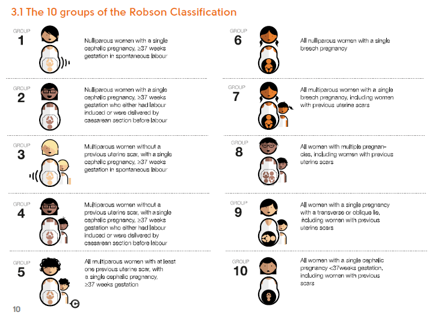

The goal of the {robson10classifier} package is to provide a suite of functions simplyfying the classification and analysis of childbirth data according to the Robson 10 Group Classification System, which was adopted by the World Health Organisation in 2015.
Overview of the Robson 10 Group Classification System
The image below is a summary of the TGCS, taken from the World Health Organisation’s TGCS Implementation Manual, available from this page.

Installation
You can install from github using the {remotes} package:
# install.packages("remotes")
remotes::install_github("https://github.com/ThomUK/robson10classifier")How to use
The package’s main is tgcs_classify(). It takes a data frame containing a minimum of 6 columns, one for each of the obstetric variables that are used to classify the Robson Groups. Each row in the data frame represents a birth. The function returns the same data frame, with an additional column for Robson_Classification. This can be a number from 1 to 10, or in the case that data required for classification was missing, “Unclassifiable”.
library(robson10classifier)
# prepare the data (ID, plus 6 columns of obstetric variables)
data <- data.frame(
ID = c(1:5),
Parity = c("Nullipara", "Multipara", "Nullipara", "Multipara", NA),
Previous_CS = c("None", "One or more", "None", "One or more", NA),
Onset_Of_Labour = c("Spontaneous", "Pre-labour CS", "Induced", "Spontaneous", NA),
Number_Of_Fetuses = c("Multiple", "Single", "Single", "Single", "Multiple"),
Gestational_Age = c("Term", "Preterm", "Term", "Term", NA),
Fetal_Lie_And_Presentation = c("Cephalic", "Breech", "Cephalic", NA, NA)
)
# use the package to make the classifications
classification <- tgcs_classify(data)
# visualise the resulting classifications in a table
kableExtra::kbl(classification)| ID | Robson_Classification | Parity | Previous_CS | Onset_Of_Labour | Number_Of_Fetuses | Gestational_Age | Fetal_Lie_And_Presentation |
|---|---|---|---|---|---|---|---|
| 1 | 8 | Nullipara | None | Spontaneous | Multiple | Term | Cephalic |
| 2 | 7 | Multipara | One or more | Pre-labour CS | Single | Preterm | Breech |
| 3 | 2 | Nullipara | None | Induced | Single | Term | Cephalic |
| 4 | Unclassifiable | Multipara | One or more | Spontaneous | Single | Term | NA |
| 5 | 8 | NA | NA | NA | Multiple | NA | NA |
Package Planning
The package is in the early stages of development. The section below summarises the functionality that is implemented, and the functionality planned for the future.
1. Implemented (or partially implemented) functions:
-
tgcs_classify()takes values for the 6 obstetric variables, and returns the Robson classification, or “Unclassifiable” if some data required to do the classification is missing.
In future:- It will also return details about why an element is unclassifiable.
- It will support sub-grouping of certain Robson Groups (eg. 2a, 2b, 4a, 4b, 5.1, 5.2).
- It will also return details about why an element is unclassifiable.
-
tgcs_make_babies()produces a simulated set of births, with randomly assigned obstetric variables. Useful for testing the package, or for a quick demo of the other functionality. eg.data <- tgcs_make_babies(1000)will make a dataframe of 1000 births. Missing data is also included, which leads to “Unclassifiable” Robson Groups, as can be occasionally expected with real world data.
In future:- An argument will be implemented to control the probability that the values under each variable occur. In this way it will be possible to tune the output in line with your facility’s numbers (eg. no missing data).
- Arguments will be implemented to add simulated birth dates, with a normally-distributed number of births on each date. It will be possible to tune the result by setting mean and standard deviations for the typical number of births per day in your facility.
2. Planned for future implementation:
tgcs_report_unclassifiable()will take a population of birth records with obstetric variables, and will summarise the reasons for any unclassifiable records, according to which obstetric variables are missing.tgcs_report_time_series()will take a population of birth records with dates (eg. births in a given healthcare facility or region), and will create an RMarkdown report of time-series trends for each Robson group, and unclassifiable records.tgcs_report_table()will take a population of birth records with dates, and will create a Robson Classification Report Table to the same standard as table 5 of the World Health Organisation Robson Classification Implementation Manual p.34